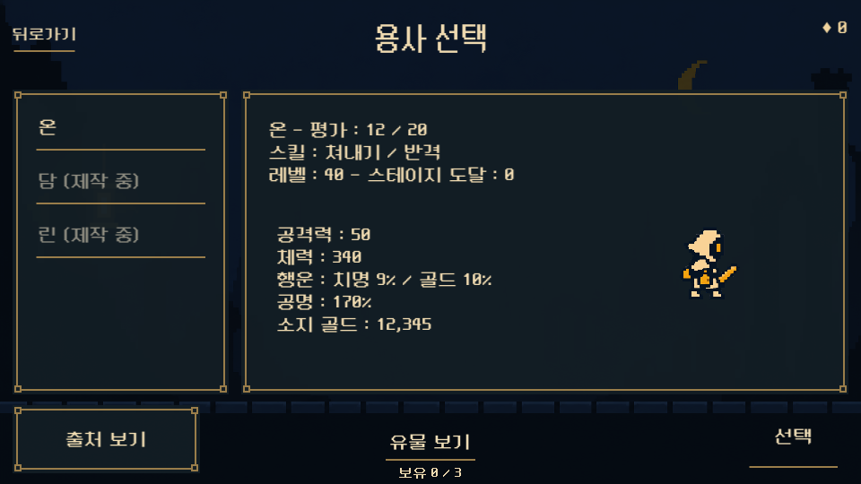
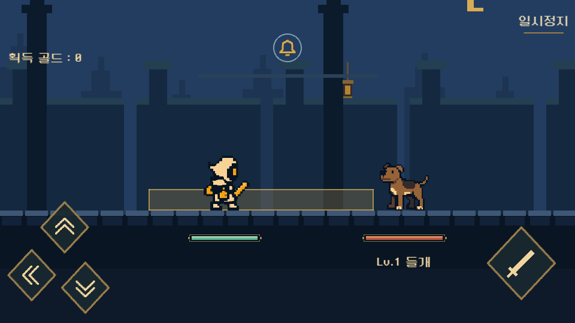
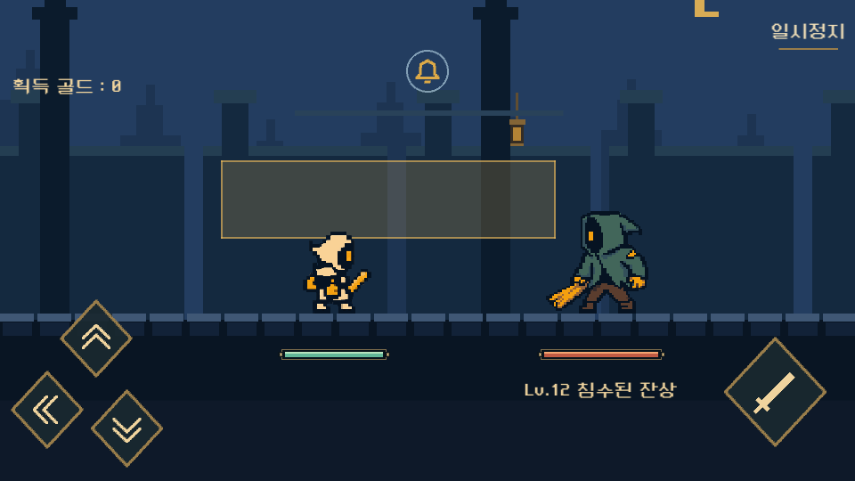

주인공의 기존 Idle을 선택 미리보기에 연결했습니다. 몬스터는 원본 주인공의 도트와 명암을 기준으로 다시 제작하고, 보스는 기존 외형과 공격을 보존한 채 Idle을 추가했습니다.
화면 갱신이나 능력치 선택 때 모션을 처음부터 다시 시작하지 않습니다.
실제로 보고 있는 캐릭터를 기준으로 재생하며, 일시정지 중에는 멈춥니다. 제작 중인 캐릭터에 다른 캐릭터의 이미지를 대신 표시하지 않습니다.
이 페이지의 애니메이션은 Unity에 가져간 동일 PNG와 프레임 유지 시간을 사용합니다.


